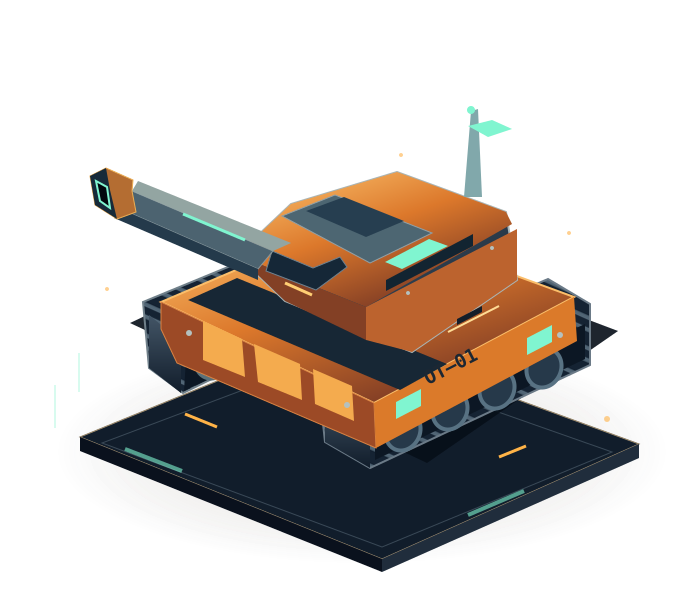
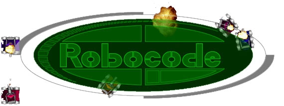
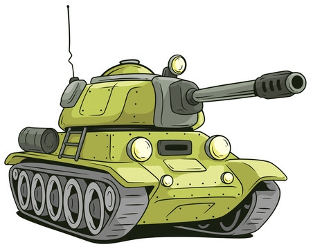
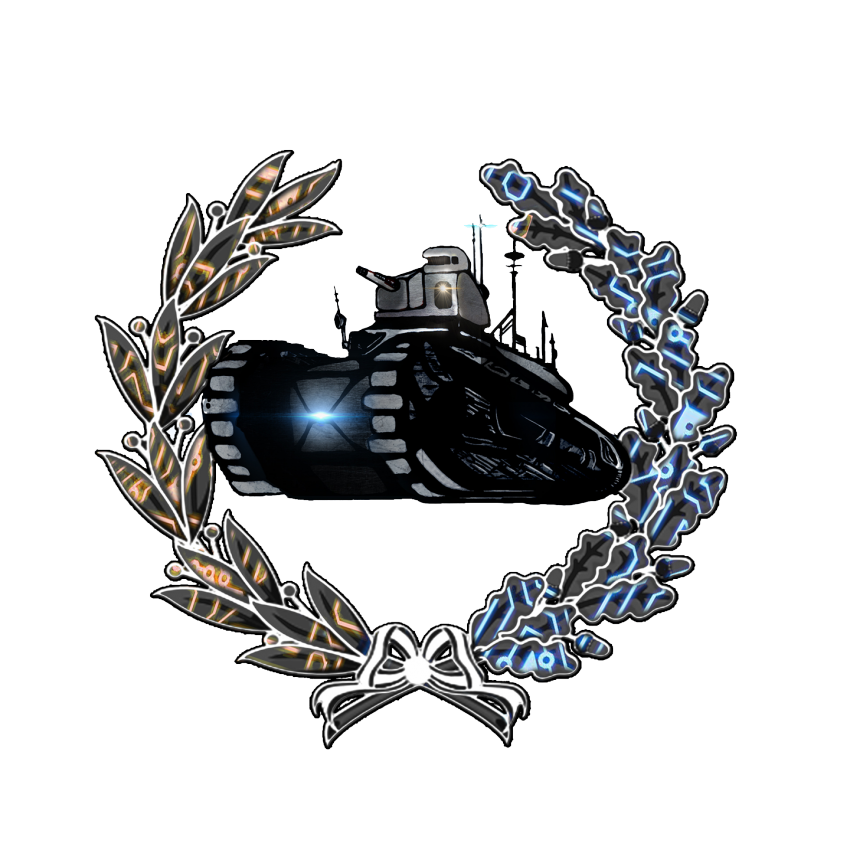

Materiales del taller
El itinerario sigue las ideas básicas de la microguía Robocode de Pascal: cuerpo, cañón, radar, métodos, bucles y eventos.
Actividad Robocode UCM ↗Microguía original en español ↗Tu primer carro de combate ↗API Robot ↗RoboWiki ↗Tu tanque. Tus reglas. Tu código.
Encaja las piezas, dale vida y entra en la arena.


Basado en los talleres de OTEA y los materiales de Robocode UCM. Conserva tus robots Java y descubre la programación por bloques.

Cada misión dura lo que necesitas.
Aprende probando. Sin prisa.
Los distintivos reconocen lo que has conseguido con tu código. Sin rachas, castigos ni ventajas de combate.
| # | Tanque / creador | Pts | G | E | P | Buchholz | Combate |
|---|
El itinerario sigue las ideas básicas de la microguía Robocode de Pascal: cuerpo, cañón, radar, métodos, bucles y eventos.
Actividad Robocode UCM ↗Microguía original en español ↗Tu primer carro de combate ↗API Robot ↗RoboWiki ↗Robocode original: compila Java real con Eclipse ECJ y ejecuta el motor 1.11.1 sobre una JVM Java 17 dentro del navegador. Robot y AdvancedRobot conservan su API original. Campo libre, reglas y puntuaciones originales.
Arena web: motor educativo con obstáculos. Bloques, Python real (CPython/Pyodide) y JavaScript real en workers. Sus reglas están documentadas; no sustituye al motor clásico.
El primer uso de Java o Python descarga su entorno de ejecución. No se instala nada en el PC. Se necesita conexión para esa descarga.
Compatibilidad y límites ↗Guardado local automático, copia de sesión y preferencias en cookie de sesión. Exporta tu proyecto para moverlo a otro ordenador. Un navegador privado o borrar los datos del sitio elimina la copia local.
Proyecto educativo de David Pacios Izquierdo (Pascal). Identidad histórica de la actividad OTEA / UCM. Robocode: Mathew A. Nelson, Flemming N. Larsen y colaboradores.
Motor/API Robocode: EPL 1.0. Código propio: MIT. CheerpJ: Leaning Technologies, licencia Community por CDN en este proyecto abierto. Pyodide y CPython: sus respectivas licencias.
Avisos completos de terceros ↗Código fuente, referencias y README ↗